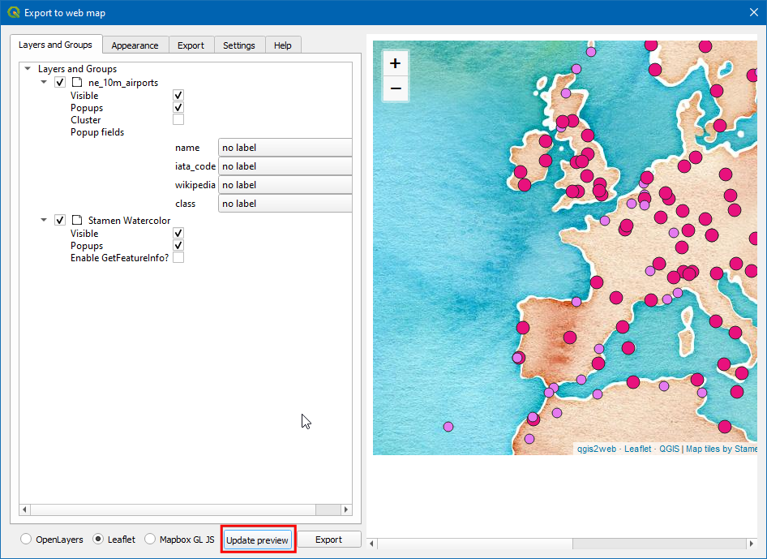
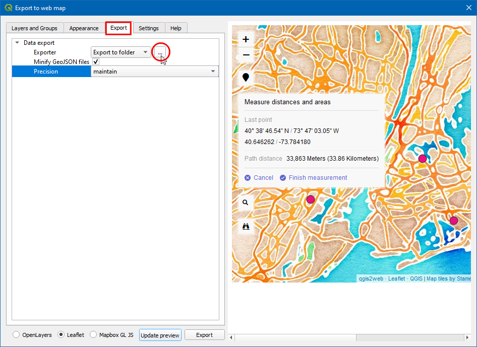
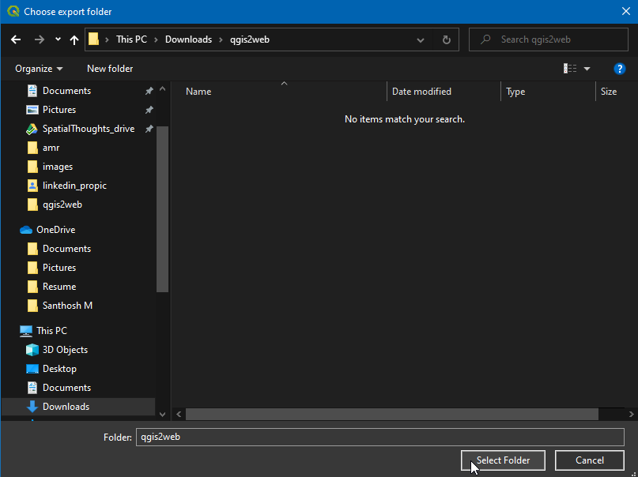
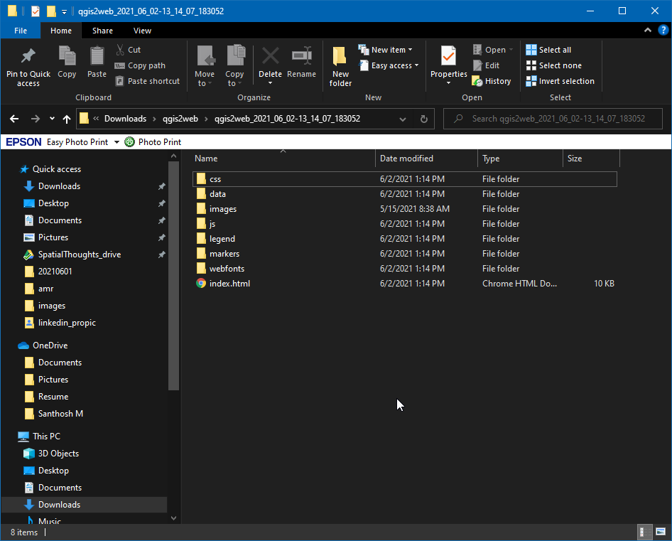
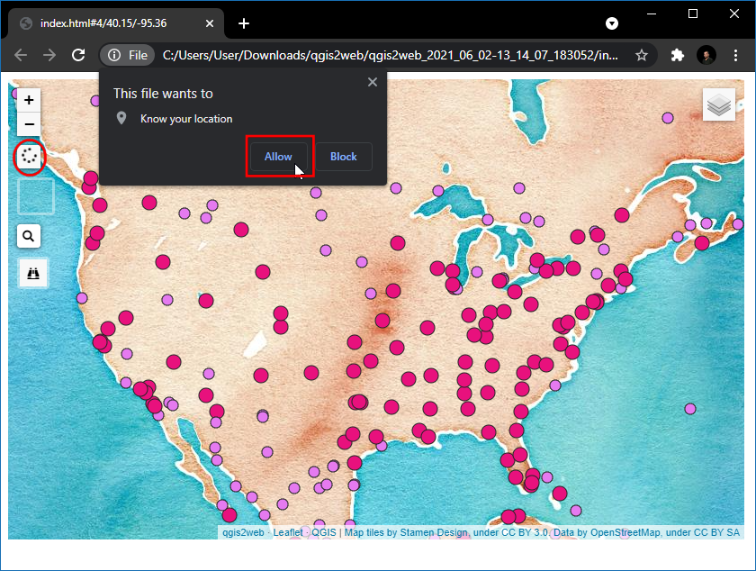

Ujaval Gandhi
Ujaval GandhiVeb mapiranje pomoću QGIS2Web (QGIS3)¶
Veb mapiranje je odličan medijum za objavljivanje vaših GIS podataka na vebu i njihovo omogućavanje drugim korisnicima. Kreiranje veb mape je veoma drugačiji proces od kreiranja u GIS-u. Korisnici GIS-a obično nisu veb programeri i to predstavlja izazov kada je potrebno kreirati veb mapu istog kvaliteta kao mapa kreirana u GIS-u. Srećom, postoje alati koji vam omogućavaju da lako prevedete svoj rad u QGIS-u na veb mape. U ovom tutorijalu ćete naučiti kako da koristite dodatak QGIS2Web za kreiranje veb mape koristeći OpenLayers ili Leaflet biblioteke iz vašeg QGIS projekta.
Pregled zadatka¶
Napravićemo veb-mapu svetskih aerodroma u obliku letaka.
Druge veštine koje ćete naučiti¶
Kako koristiti Edit Widgets u QGIS-u da biste sakrili određena polja i podesili prilagođene tipove.
Kako kreirati virtuelno polje pomoću Kalkulatora polja.
Dobijte podatke¶
Koristićemo skup podataka Airports iz Natural Earth-a.
Preuzmite datoteku „Airports shapefile <http://www.naturalearthdata.com/http//www.naturalearthdata.com/download/10m/cultural/ne_10m_airports.zip>“.
Radi lakšeg snalaženja, možete direktno preuzeti kopiju skupova podataka sa donjih linkova:
Izvor podataka [NATURALEARTH]
Procedura¶
Otvorite QGIS. Koristeći panel Browser, idite do fascikle koja sadrži preuzetu datoteku. Proširite datoteku
ne_10m_airports.zipi prevucitene_10m_airports.shpna platno.

Sada će novi sloj biti učitan na platnu, kreiraćemo mapu u QGIS-u koja izgleda i ponaša se baš kao što bismo želeli na veb mapi. Dodatak
qgis2webće koristiti repliciranje QGIS podešavanja i automatski kreirati veb mapu bez našeg znanja o bibliotekama veb mapiranja. Kada korisnik klikne na marker aerodroma, želimo da se u informativnom prozoru prikažu korisne informacije o aerodromu. Ove informacije su već prisutne u tabeli atributa slojevane_10m_airports. Kliknite desnim tasterom miša na slojne_10m_airportsi izaberite Properties.

U dijaloškom okviru Svojstva sloja, pređite na Obrazac atributa. Primetićete sva polja imena sloja.

Nisu sva polja relevantna za korisnika, tako da se polja osim ime, iata_code, tip i Vikipedija isključuju klikom na polje i promenom Tip vidžeta u
Sakriven.

U polju wikipedia označite
MultilineiHTMLtako da će veza prisutna u ovom polju biti prikazana kao hiperlink za korisnika. Nakon podešavanja odgovarajućeg tipa vidžeta za svako polje, kliknite na OK.

Kliknite na dugme Identifikuj karakteristike u traci sa alatkama.

Kliknite na tačku, ovo će prikazati detalje o aerodromu na toj lokaciji, prikazuju se samo polja tip, naziv, iata_kod i vikipedija dok su ostala polja skrivena. Takođe, polje vikipedija je istaknuto kao hiperlink.

Vrednosti u polju tip mogu biti malo informativnije. Hajde da napravimo novo polje pod nazivom klasa i dodamo reč Aerodrom posle svakog unosa u polje tipa. (tj.) unos kao glavni postaće Glavni aerodrom.

Unesite Naziv izlaznog polja kao
klasa, izaberiteTekst(Niz)u Tip izlaznog polja. Polje slojatipsadrži vrednosti kao što sumali,srednji,velikiitd. Možemo dodati izraz da promenimo velika i mala slova reči u velika i mala slova rečenice i dodati reč aerodrom radi bolje čitljivosti. Unesite sledeći izraz u polje Izraz i kliknite na U redu.
concat( title("type"), ' Airport')
Белешка
Takođe možete koristiti operator spajanja nizova ||. Izraz se može prepisati kao (title("type") || ' Airport')
Sada imamo bolje izgledajuće polje za tip aerodroma, više nam nije potrebno polje type. Kliknite desnim tasterom miša na sloj i izaberite Properties, prebacite se na Attributes Form i isključite polje type tako što ćete Widget Type prebaciti na
Hidden. Kliknite na OK.

Sada koristite alatku Identifikuj karakteristike i izaberite aerodrom, videćete novo polje klasa sa lepo formatiranom kategorijom aerodroma i polje tip je uklonjeno.

Sada stilizujmo sloj, kliknite na ikonu Otvori panel za stilizovanje slojeva i promenite Tip na
Kategorisano, u Vrednost izaberiteklasai kliknite na Klasifikuj.

Videćete da se krugovi različitih boja dodeljuju različitim tipovima aerodroma. Za ovaj tutorijal, ograničićemo mapu na civilne aerodrome. Držite pritisnut taster Ctrl i izaberite sve kategorije za vojne aerodrome. Kada ih izaberete, kliknite Delete.

Osim što kategoriji možemo dodeliti različite boje, možemo promeniti veličinu simbola kako bismo vizuelno pomogli našim korisnicima da razlikuju različite tipove aerodroma. Dvaput kliknite na ikonu simbola u odeljku „Glavni aerodrom“ da biste promenili veličinu.
Podesite Size na
4, sada pratite gornji korak da biste podesili veličinuMid Airportna3iSmall Airportna2.

Dodajmo osnovni sloj za georeferenciranje, „Stamen Watercolor“ bi bila lepa pozadinska mapa za ovaj projekat, da biste dodali sloj, izaberite . Da biste saznali više o ovom dodatku, posetite Korišćenje dodataka (QGIS3) tutorijale.

Naša mapa je sada spremna. Sada je pravo vreme da sačuvamo naš rad. Kliknite na ikonu Sačuvaj projekat u traci sa alatkama i unesite
Aerodromikao naziv projekta.

Sada smo spremni da izvezemo naš projekat na veb mapu. Instalirajte dodatak qgis2web tako što ćete otići na (Pogledajte korišćenje_dodataka za više detalja o instaliranju dodataka u QGIS). Kada je dodatak instaliran, idite na .

Sada će se pojaviti dijalog prozor Izvoz u veb mapu. Ovo je primarna konzola za prilagođavanje veb izgleda vaše veb mape. Levi panel sadrži sve opcije konfiguracije. Možete promeniti bilo koje podešavanje i pregledati ažuriranja na desnoj strani klikom na Pregled ažuriranja. Dodatak može da izveze mapu koristeći mnogo različitih biblioteka za veb mapiranje. Za ovaj tutorijal, koristićemo biblioteku Leaflet. Uverite se da ste izabrali opciju Leaflet na dnu.

Sada promenimo Iskačuća polja sloja ne_10m_airport, promenimo sva polja u
inline label, ovo će dati bolji pregled prilikom pregleda objekta na mapi.

Sada pređite na karticu Izgled. Označite sledeće kućice - Dodaj pretragu adrese, Geolokacija korisnika, Istakni pri prelasku mišem. U Dodaj listu slojeva: izaberite
Sklopljeno. Za Pretraga slojeva izaberite poljene_10m_airport: iata_code. Ova opcija dodaje polje za pretragu gde korisnik može da traži aerodrom sa njegovim kodom. Kada napravite sve izmene, kliknite na Ažuriraj pregled.

Sada, hajde da proverimo objekte dodate na mapu, kliknite na ikonu Pronađi (dvogled) i otkucajte
DXBi pritisnite enter, ovo će centrirati mapu na međunarodni aerodrom u Dubaiju.

Kliknite na ikonu aerodroma da biste istražili informacije o aerodromu.

Kliknite na ikonu Pretraga (lupa) i potražite „Njujork“ i pritisnite enter.

Sada će mapa biti centrirana na vaš grad, možete pokušati da pronađete lokaciju za bilo koje mesto/adresu, a ova lokacija se dobija pomoću geokodiranja adrese. Takođe ćemo dodati i meru da bismo dobili linearnu udaljenost između bilo kojih datih tačaka na veb mapi. U Alat za merenje izaberite
Metrika. Kliknite na Ažuriraj pregled.

Sada hajde da izmerimo linearno rastojanje u SI jedinicama, između aerodroma EWR i JFK. Kliknite na ikonu Meri (lenjir) i izaberite Kreiraj novo merenje. Zatim, kliknite preko aerodroma kada je tačka izabrana, geografska širina i dužina tačke se beleže i koriste za izračunavanje rastojanja, sada je rastojanje prikazano u metrima.

Pređite na karticu Izvoz i označite polje Minifikuj GeoJSON datoteke. Ovo smanjuje veličinu rezultujuće datoteke. Kliknite na … pored Izvoznik.

Izaberite željenu lokaciju (fasciklu) za izvoz i kliknite na Izaberi fasciklu, zatim kliknite na dugme Izvoz.

Sada su sva svojstva, stilizovanje i prilagođene opcije izvezeni u zasebnu fasciklu. Nakon uspešnog završetka, u iskačućem dijaloškom prozoru „Napredak“ će se pojaviti veza, kliknite na vezu da biste otvorili lokaciju datoteke.

Ova fascikla će sadržati sve potrebne datoteke za kreiranje veb mape. Da biste videli veb mapu, kliknite na datoteku
index.html.

Белешка
Dodatak „qgis2web“ ima mnoga ograničenja i ne može da uradi sve što mogu moćne biblioteke za veb mapiranje „OpenLayers“ i „Leaflet“. Ovaj proces može poslužiti kao početna tačka u vašem procesu veb mapiranja i uštedeti vam dragoceno vreme kreiranjem osnovnog šablona iz kojeg možete dalje prilagoditi veb mapu. Možete izmeniti ove datoteke u uređivaču koda da biste ih prilagodili kako želite.
Veb-mapa će biti prikazana u vašem podrazumevanom veb pregledaču. Sada, hajde da testiramo poslednju opciju dodatu na mapu, (tj.) Geolociraj korisnika, kliknite na ikonu Marker.

Pregledač će tražiti dozvolu za Poznavanje vaše lokacije, kliknite na „Dozvoli“ i mapa će se centrirati na vašu trenutnu lokaciju.

Izvezena mapa se nalazi na vašem računaru. Iako je možete videti u akciji, nije baš korisna jer je ne možete deliti ni sa kim. Da bi drugi mogli da vide mapu, potrebno je da je otpremite na veb server. Iako će proces otpremanja varirati u zavisnosti od tipa servera kojem imate pristup - jeftin i jednostavan način da objavite svoju mapu na vebu bio bi da koristite bilo koju od javnih usluga skladištenja u oblaku. Amazon S3 je popularna usluga skladištenja koja se može koristiti za prikazivanje statičnih veb stranica poput naše mape. Moraćete da se registrujete za nalog. Kada je vaš nalog podešen, posetite AWS konzolu i pratite uputstva da biste kreirali kantu.

Белешка
Iako AWS uključuje velikodušni „Free-Tier <https://aws.amazon.com/free/?all-free-tier>`_, mogu vam se naplatiti naknade za korišćenje ove usluge ako prekoračite ograničenja besplatnog korišćenja.
Kada se kanta kreira, možete da otpremite sadržaj izvezene fascikle u kantu.

Ako želite da mapa bude javno dostupna, obavezno izaberite Dodeli javni pristup za čitanje prilikom otpremanja.

Kada se podaci otpreme, pronađite datoteku index.html. URL objekta je URL koji se može koristiti za pristup mapi.

Datoteke generisane iz ove vežbe sam otpremio u AWS S3 korpu. Verzija mape koju hostuje AWS je ugrađena putem IFrame-a ispod. Takođe možete direktno pregledati mapu na https://qgis-tutorials-data.s3.us-east-2.amazonaws.com/qgis2web/index.html
If you want to give feedback or share your experience with this tutorial, please comment below. (requires GitHub account)